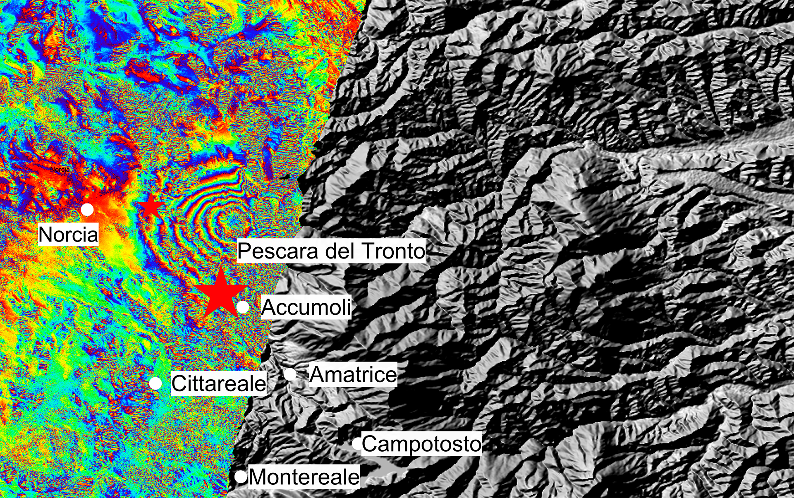
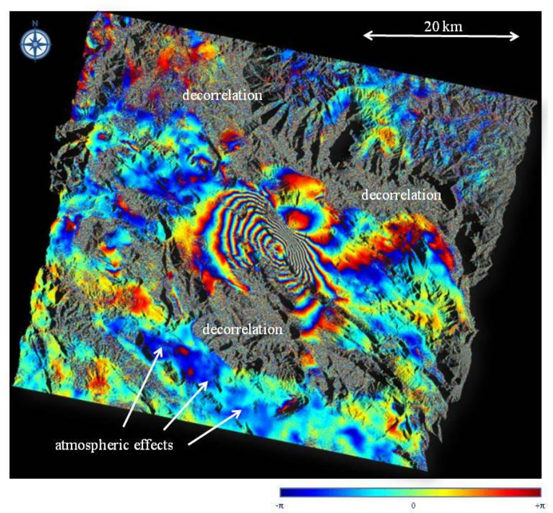
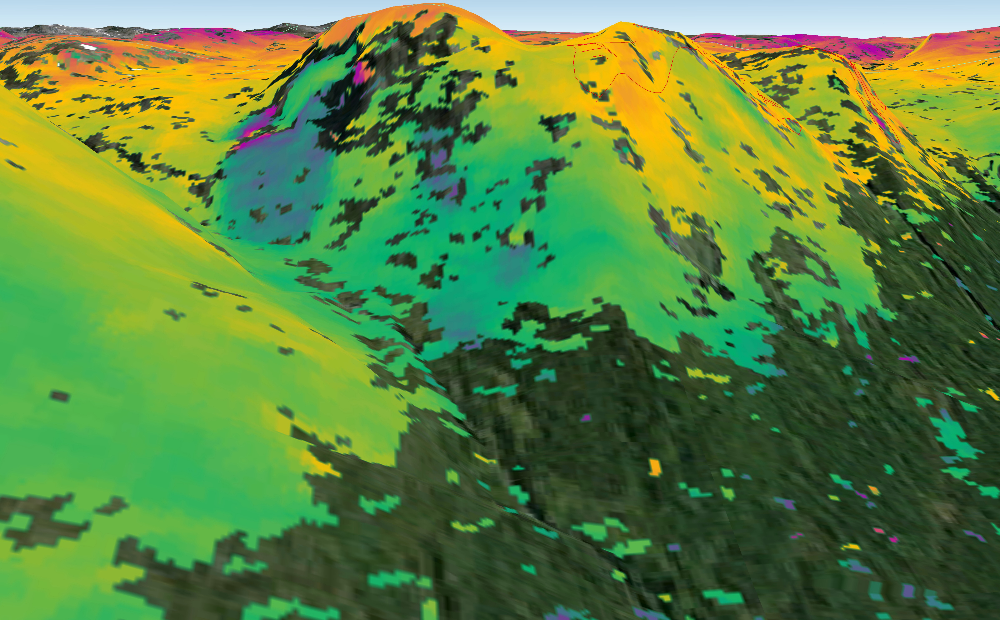

InSAR: Quando SAR non basta

Qualche anno fa, durante un progetto universitario sull'alluvione che ha colpito l'Emilia-Romagna nel maggio 2023, avevo già messo le mani in pasta su dati Sentinel-1. L'obiettivo, a quel tempo, era distinguere l'acqua comparsa dopo l'evento dai corpi idrici permanenti (laghi, fiumi, canali già presenti) e capire quanto il preprocessing, in particolare la rimozione del rumore termico, influenzasse il risultato finale.
In quel lavoro il protagonista assoluto è stato il backscatter. Guardavo quanta energia tornava indietro verso il satellite, come cambiava tra due acquisizioni e cosa potevo dedurne sulla superficie osservata. La fase del segnale c'era, naturalmente, ma l'avevo lasciata da parte. Per il problema che stavo cercando di risolvere, semplicemente, non mi serviva.
Sembrerà assurdo (magari solo a me), ma quando inizi a studiare l'InSAR, scopri che proprio quella parte lasciata in disparte diventa quello che ti serve per risolvere il problema. Infatti, confrontando la fase di acquisizioni SAR successive possiamo stimare variazioni della distanza tra sensore e terreno lungo la Line of Sight, ovvero la direzione con cui il radar sta osservando il bersaglio. ESA parla esplicitamente di movimenti rilevabili fino alla scala di pochi millimetri su vaste aree! [1]esa.int
Detta così sembra quasi magia... In realtà, prima di inebriarci con la parola “millimetrico”, conviene capire bene che cosa stiamo misurando.
Resta comunque un fatto notevole: Sentinel-1 osserva la Terra da un'orbita a circa 693 km di quota [3]esa.int, e da lassù possiamo ricostruire movimenti superficiali inferiori al centimetro.
Come ci riesce?
Per capirlo conviene tornare al punto da cui ero partito anch'io: quel pixel SAR che, a prima vista, sembrava raccontare soltanto quanto una superficie fosse chiara o scura.
Lo stesso pixel racconta due storie
Un'immagine radar non nasce come una fotografia in bianco e nero. Nei prodotti SLC, Single Look Complex, ogni pixel è rappresentato da un valore complesso: dentro quel numero convivono ampiezza e fase. La specifica dei prodotti Sentinel-1 lo dice in maniera piuttosto netta: un SLC conserva entrambe; un prodotto GRD, Ground Range Detected, è invece rilevato e perde l'informazione di fase [4]sentinels.copernicus.eu!
L'ampiezza descrive quanto è forte il segnale che torna verso l'antenna. Da lì ricaviamo l'intensità e, dopo la calibrazione radiometrica, grandezze come sigma nought che usiamo per ragionare sul backscatter.
È la parte che avevo sfruttato nel flood mapping. Una superficie d'acqua relativamente liscia tende a riflettere l'energia radar in maniera speculare, lontano dal sensore, e quindi spesso appare scura. Confrontando il backscatter prima e dopo un evento possiamo cercare cambiamenti compatibili con la comparsa di acqua.
La fase, invece, indica dove ci troviamo all'interno del ciclo dell'onda elettromagnetica ricevuta e contiene informazione legata alla distanza percorsa dal segnale. Presa da sola, però, non è utilissima 🥲
Qui sta il primo piccolo inghippo.
Definizione: SAR
Un Synthetic Aperture Radar è un sensore radar attivo: trasmette microonde verso la superficie e misura l'eco che ritorna. Sfruttando il movimento della piattaforma lungo l'orbita, combina coerentemente gli echi raccolti in posizioni successive e sintetizza un'apertura molto più lunga dell'antenna fisica. Sentinel-1 usa un SAR in banda C a 5,405 GHz; nella modalità Interferometric Wide Swath osserva una fascia larga circa 250 km con una risoluzione nominale di 5 × 20 m [3]esa.int.
Box: perché per l'InSAR si parte dagli SLC?
Perché l'interferometria vive della differenza di fase. Nei GRD Sentinel-1 il segnale è già stato detected e la fase è persa; negli SLC rimangono sia ampiezza sia fase [4]sentinels.copernicus.eu. Possiamo quindi usare un GRD per moltissime analisi di backscatter, ma non per costruire a posteriori un interferogramma.
Cos'è una fase?
Immaginiamo di osservare una sinusoide. Se conosco soltanto la sua fase in un certo istante, so dove mi trovo all'interno del ciclo, ma non so quanti cicli completi siano avvenuti prima.
È come guardare la lancetta dei secondi di un orologio senza vedere ore e minuti. Se punta sul 15, conosco la posizione della lancetta, ma non so se siano passati 15 secondi, 75 o 135.
La fase radar ha lo stesso problema: viene osservata modulo $2\pi$. Una singola misura di fase non basta quindi a ricostruire la distanza assoluta tra satellite e bersaglio.
L'InSAR cambia domanda. Non cerca la distanza assoluta: confronta la fase di due o più acquisizioni della stessa area e osserva come è cambiata [5]nisar.jpl.nasa.gov.
 Figura 01: Schema geometrico della misura della deformazione mediante InSAR: il sensore radar acquisisce immagini della stessa area in due passaggi successivi e, dalla differenza di fase del segnale, ricava la variazione della distanza sensore–terreno lungo la linea di vista (line of sight, LOS). (Fonte: NASA/JPL, NISAR mission)
Figura 01: Schema geometrico della misura della deformazione mediante InSAR: il sensore radar acquisisce immagini della stessa area in due passaggi successivi e, dalla differenza di fase del segnale, ricava la variazione della distanza sensore–terreno lungo la linea di vista (line of sight, LOS). (Fonte: NASA/JPL, NISAR mission)
Se tra i due passaggi un punto a terra si sposta lungo la linea di vista del satellite, cambia la distanza tra sensore e bersaglio. Indichiamo questa variazione con $\Delta d_{LOS}$. Il segnale radar, però, non percorre quella distanza una sola volta: viaggia dal satellite al terreno e poi torna dal terreno al satellite. Uno spostamento $\Delta d_{LOS}$ modifica quindi il cammino complessivo dell'onda di $2\Delta d_{LOS}$.
Una variazione del cammino pari a una lunghezza d'onda $\lambda$ produce una variazione di fase di $2\pi$ radianti. Il primo fattore della formula converte quindi il cammino in fase; il secondo tiene conto del percorso di andata e ritorno:
$$ |\Delta \phi_{def}| = \frac{2\pi}{\lambda} \cdot 2|\Delta d_{LOS}| = \frac{4\pi}{\lambda}|\Delta d_{LOS}| $$
Invertendo la formula otteniamo direttamente lo spostamento lungo la LOS:
$$ |\Delta d_{LOS}| = \frac{\lambda}{4\pi}|\Delta \phi_{def}| $$
Ora il significato del fattore $\lambda/2$ è più esplicito. Se la fase dovuta alla deformazione varia di un ciclo completo, cioè $2\pi$ radianti, allora:
$$ |\Delta \phi_{def}| = 2\pi \quad \Longrightarrow \quad |\Delta d_{LOS}| = \frac{\lambda}{2} $$
In altre parole, un ciclo completo della fase interferometrica corrisponde a uno spostamento pari a metà della lunghezza d'onda lungo la LOS. La relazione riguarda il valore assoluto: il segno, che distingue un movimento verso il satellite da uno in allontanamento, dipende dalla convenzione adottata.
Sentinel-1 lavora a 5,405 GHz, che corrispondono a una lunghezza d'onda di circa 5,55 cm. Un ciclo interferometrico completo corrisponde quindi a circa 2,8 cm di variazione LOS [3]esa.int [6]esa.int. Nella fase wrapped, tuttavia, $0$ e $2\pi$ coincidono: è per questo che un nuovo ciclo ricomincia dallo stesso valore di fase e, nell'interferogramma, dallo stesso colore.
Tra poco vediamo come quei 2,8 cm compaiono nella pratica su una zona dell'Italia centrale. Intanto inserisco un'immagine presa direttamente dall'ESA:

Figura 02: Interferogramma Sentinel-1B/1A del terremoto del 24 agosto 2016 in Italia centrale: le frange colorate rappresentano cicli di fase interferometrica, ciascuno equivalente a circa 2,8 cm di variazione lungo la LOS. Sette frange = ~20 cm di deformazione. (Fonte: ESA, Italy earthquake displacement)Definizione: Line of Sight
La LOS è la linea che congiunge il sensore al bersaglio. L'InSAR misura la proiezione del vettore di spostamento lungo quella direzione [5]nisar.jpl.nasa.gov. Per questo “10 mm di displacement InSAR” non significa automaticamente “il terreno è sceso di 10 mm”. Potrebbe essersi mosso verticalmente, orizzontalmente o con una combinazione delle due componenti.
Come nasce un interferogramma?
Per costruire un interferogramma dobbiamo prima fare in modo che due immagini SAR “parlino” pixel per pixel della stessa porzione di terreno. Serve quindi una co-registrazione molto accurata.
A quel punto si combinano i segnali complessi delle due acquisizioni. Per dirlo in "matematichese", l'interferogramma nasce moltiplicando il valore complesso di una scena per il complesso coniugato dell'altra. La fase del risultato invece contiene la differenza di fase tra i due passaggi [5]nisar.jpl.nasa.gov.
Come se non bastasse, tra un'acquisizione e l'altra cambino più cose del solo terreno😜!
Il satellite non passa esattamente nello stesso punto dello spazio. Le due posizioni orbitali sono separate da una baseline interferometricaBaseline interferometrica è la distanza tra le due posizioni orbitali del satellite nelle due acquisizioni. Si scompone in una componente parallela alla LOS e in una perpendicolare, spesso indicata con $B_\perp$: quest'ultima è quella che conta di più, perché modula la sensibilità alla topografia e, se diventa troppo ampia, può contribuire alla decorrelazione geometrica.. Cosa voglio dire in parole più semplici? Se tra un passaggio e l'altro il satellite si sposta troppo lateralmente (rispetto al punto che sta osservando), l'angolo di vista cambia. Se questa distanza laterale è eccessiva, le due "foto" radar diventano così diverse tra loro che non è più possibile sovrapporle per confrontarle. Oltre a tutto questo, cambiano anche l'atmosfera attraversata dal segnale, lo stato della superficie e, inevitabilmente, il rumore.
Quindi l'interferogramma grezzo contiene una miscela di informazioni. Una rappresentazione schematica utile è:
$$ \Delta \phi = \Delta \phi_{def} + \Delta \phi_{topo} + \Delta \phi_{orb} + \Delta \phi_{atmo} + \Delta \phi_{scatt} + \Delta \phi_{noise} $$
Attenzione però, la deformazione è soltanto uno dei contributi alla fase interferometrica. Se si legge la documentazione di EGMS vengono distinti esplicitamente i termini legati a geometria, topografia, atmosfera, decorrelazione e movimento del bersaglio [7]library.land.copernicus.eu.

Figura 03: Esempio di interferogramma SAR differenziale (dopo la rimozione delle componenti topografiche). Le frange interferometriche sono generate dallo schema di deformazione co-sismica causato dal terremoto dell'Aquila in Italia (aprile 2009). Immagini acquisite da SAR in banda C con lunghezza d'onda di circa 5,6 cm, per cui ogni frangia rappresenta circa 28 mm di spostamento nella linea di vista del satellite. Dati SAR acquisiti dalla missione Envisat dell'ESA. [7]library.land.copernicus.euIl lavoro diificile è proprio questo: modellare o almeno quantificare tutto ciò che potrebbe sembrare movimento senza esserlo.
Perché quei colori?
Il 24 agosto 2016 un terremoto colpì l'Italia centrale. ESA e CNR-IREA combinarono due acquisizioni Sentinel-1, una del 20 agosto e una del 26 agosto, e produssero un interferogramma dell'area deformata (che è la Figiura 02 che abbiamo visto prima) [6]esa.int.
Nell'immagine compaiono sette frange interferometriche. ESA le tradusse in una misura molto intuitiva: sette cicli di colore corrispondevano a circa 20 cm di deformazione lungo la linea di vista del radar; ogni singolo ciclo valeva approssimativamente 2,8 cm [6]esa.int.
Eccolo di nuovo, $\lambda/2$.
L'interferogramma visualizza normalmente una fase wrapped, confinata in un intervallo di ampiezza $2\pi$. Quando la fase completa un giro, il colore ricomincia. Le frange sono quindi un modo visivo per contare cicli di fase.
L'analogia più vicina sono forse le curve di livello di una carta topografica. Non perché rappresentino la stessa cosa, ovviamente, ma perché entrambe trasformano una quantità continua in una successione leggibile di livelli. Nell'interferogramma, però, non stiamo contando ovviamente i metri di quota, ma i cicli della differenza di fase.
Contare le frange non ci consegna il vettore tridimensionale del movimento. Siamo ancora dentro una proiezione lungo la LOS!
Coherence = Sovrapponibile
Prima ancora di domandarci quanto si sia mosso il terreno, dobbiamo capire se le due acquisizioni possono essere confrontate in maniera affidabile.
Qui entra la coerenza interferometrica, normalmente indicata con $|\gamma|$, una misura normalizzata della somiglianza del segnale complesso tra le due osservazioni. Il suo modulo varia tra 0 e 1: valori alti indicano una relazione interferometrica stabile, valori bassi una fase progressivamente meno affidabile per stimare lo spostamento [7]library.land.copernicus.eu.
Perché si perde coerenza? Le ragioni sono parecchie. Può cambiare la geometria di osservazione, può passare troppo tempo, può cambiare l'umidità del suolo, può nevicare, può crescere o muoversi la vegetazione, oppure la superficie può essere stata modificata dallo stesso fenomeno che stiamo cercando di osservare. ESA ricorda esplicitamente che crescita della vegetazione, vento sulle foglie e pioggia possono impedire alle due immagini di correlarsi correttamente [8]esa.int.
La cosa interessante è che la coerenza ha una doppia vita. Da un lato è una misura della qualità interferometrica; dall'altro la perdita di coerenza può diventare essa stessa un segnale di cambiamento della superficie.
Per una frana rapida, per esempio, il movimento può essere talmente forte da cambiare completamente la disposizione degli scatterer tra due acquisizioni. In quel caso non otteniamo necessariamente “una deformazione più facile da misurare”: possiamo perdere proprio la relazione di fase che ci serviva.
Caso reale: Kåfjord, Norvegia
ESA combinò due acquisizioni Sentinel-1A del 30 agosto e 23 settembre 2014 per osservare una frana nel comune di Kåfjord, in Norvegia. Nei 24 giorni tra le due acquisizioni il terreno si era mosso di circa 1 cm [10]esa.int. In questo caso questa tecnologia diventa uno strumento per seguire un movimento lento di versante.

Figura 04: Immagine interferometrica della deformazione superficiale di una frana nel comune di Kåfjord, nella contea di Troms (Norvegia), ottenuta combinando due acquisizioni radar Sentinel-1A del 30 agosto e del 23 settembre 2014. Nei 24 giorni tra i due passaggi il terreno si è mosso di circa 1 cm. L'InSAR è una tecnica impiegata dalle autorità norvegesi per mappare la pericolosità da frana su scala nazionale; la rivisita di Sentinel-1 ogni 12 giorni ne aumenta il valore operativo. (Fonte: ESA, [10]esa.int).Wrapped, unwrapped e quei giri che non vediamo
Torniamo alla lancetta dei secondi.
Sappiamo dove si trova all'interno del giro, ma non quanti giri abbia già completato. Per trasformare la fase wrapped in una superficie continua dobbiamo ricostruire i multipli interi di $2\pi$ persi nel processo.
È il phase unwrapping.
In un'area coerente e con variazioni spaziali graduali, possiamo seguire la continuità della fase e capire dove aggiungere o sottrarre cicli interi. Le cose si complicano quando compaiono rumore, buchi di coerenza, forti gradienti di deformazione o geometrie difficili.
Un errore di un ciclo non è una piccola sbavatura. Con Sentinel-1 significa sbagliare di circa 2,8 cm lungo la LOS. La documentazione EGMS definisce infatti l'unwrapping come il processo con cui si recupera il corretto numero di cicli da 360° necessario per arrivare alla stima dello spostamento [7]library.land.copernicus.eu.
Definizione: Phase unwrapping
È la ricostruzione di una fase continua a partire da misure note soltanto modulo $2\pi$. In parole povere, dobbiamo capire quanti “giri completi” separano davvero due punti. Dove la coerenza crolla, questa ricostruzione diventa molto più fragile.
Ecco perché una coherence map non è un allegato da guardare dopo. Dice dove stiamo ricostruendo la storia con indizi solidi e dove, invece, stiamo iniziando a camminare sul ghiaccio sottile.
Il satellite vede l'ombra del movimento
Immaginiamo ora un punto che si sposti di 10 cm verso est. Il radar non misura “10 cm verso est”. Misura quanto di quel vettore cade lungo la sua LOS.
Lo stesso spostamento, osservato da una geometria diversa, produce quindi una misura diversa.
Le orbite ascending e descending sono preziose proprio per questo: osservano il terreno da lati differenti. Combinando più geometrie possiamo ricostruire meglio alcune componenti del moto. Con satelliti quasi polari come Sentinel-1, però, la sensibilità alla componente nord-sud rimane debole; per questo la decomposizione più robusta riguarda in genere la componente verticale e quella est-ovest [7]library.land.copernicus.eu.
Il terremoto del 30 ottobre 2016 nell'Italia centrale è un caso quasi didattico. Analizzando varie acquisizioni Sentinel-1, CNR-IREA e INGV ricostruirono uno spostamento di circa 40 cm verso est nell'area di Montegallo, circa 30 cm verso ovest nell'area di Norcia, una subsidenza fino a circa 60 cm intorno a Castelluccio e un sollevamento di circa 12 cm vicino a Norcia [11]esa.int.
Sono numeri che raccontano una cosa importante: una singola LOS avrebbe visto soltanto la proiezione di quel movimento. Cambiando geometria, il fenomeno acquista direzione.
Caso reale: Norcia e Castelluccio, ottobre 2016
ESA specifica che le componenti est-ovest e verticale furono ricavate utilizzando Sentinel-1A e Sentinel-1B in differenti geometrie di osservazione [11]esa.int. È il passaggio giusto per smettere di pensare alla misura InSAR come a un generico “abbassamento del terreno”.
Un interferogramma è una coppia. Una serie temporale cambia il problema
Per un terremoto, una coppia pre-evento/post-evento può già raccontare parecchio. Se invece voglio seguire la subsidenza di una città, una frana lenta o una deformazione infrastrutturale, conoscere la differenza tra due date è soltanto l'inizio.
Voglio sapere se il movimento è lineare, stagionale, intermittente. Voglio capire se accelera, se cambia regime, se un'anomalia è presente da anni o compare dopo un intervento.
È qui che entrano le tecniche multi-temporali InSAR.
Due nomi tornano continuamente: Persistent Scatterer Interferometry (PSI) e Small Baseline Subset (SBAS). La documentazione algoritmica di EGMS li tratta come due delle famiglie consolidate delle tecniche multi-interferogramma [7]library.land.copernicus.eu.
Nella PSI si cercano bersagli che mantengano nel tempo una risposta radar sufficientemente stabile. In città possono essere spigoli di edifici, strutture metalliche, parapetti di ponti, tralicci o altri oggetti capaci di creare uno scattering dominante e ripetibile. EGMS sottolinea infatti che gli ambienti urbani tendono ad avere una densità elevata di Persistent Scatterer, mentre la vegetazione è molto meno favorevole [7]library.land.copernicus.eu.
Lo SBAS parte invece dalla rete di interferogrammi: vengono imposte soglie sulla baseline temporale e su quella spaziale e si selezionano coppie sufficientemente vicine per contenere la decorrelazione. L'insieme delle differenze viene poi utilizzato per ricostruire l'evoluzione temporale dello spostamento [7]library.land.copernicus.eu [12]doi.org.
Nelle pipeline moderne il confine è meno rigido di quanto sembri sui libri. Accanto ai Persistent Scatterer compaiono i Distributed Scatterer, regioni nelle quali nessun singolo pixel è un bersaglio dominante ma gruppi di pixel statisticamente omogenei possono essere mediati per aumentare il rapporto segnale-rumore [7]library.land.copernicus.eu.
Box: PSI e SBAS in una frase, senza barare troppo
La PSI mette al centro la stabilità nel tempo di bersagli persistenti; SBAS mette al centro una rete di coppie con baseline contenute. È una semplificazione, ma è abbastanza buona per orientarsi. Appena si entra nelle implementazioni industriali, le famiglie iniziano a contaminarsi e compaiono PS, DS, reti interferometriche e strategie proprietarie.
Dove tornano i millimetri
A questo punto possiamo riprendere la frase da cui eravamo partiti e darle finalmente un significato meno nebuloso.
Lo European Ground Motion Service, EGMS, produce misure InSAR su scala europea usando dati Sentinel-1. Nel prodotto Basic ogni measurement point ha una velocità media lungo la LOS, indicatori di qualità e una serie temporale; i prodotti Calibrated vengono riferiti a un modello derivato da GNSS, mentre l'Ortho combina le geometrie per produrre componenti verticale ed est-ovest su una griglia regolare [2]land.copernicus.eu.
Le specifiche correnti riportano una mean velocity STD di 0,5 mm/anno (1σ) per Basic e Calibrated e di 0,7 mm/anno (1σ) per Ortho. In entrambi i casi il requisito vale per coppie di punti fino a 10 km di distanza, con velocità costante nell'intervallo elaborato e coherence > 0,7 [2]land.copernicus.eu. La documentazione spiega inoltre che la mean velocity STD è stimata dalla propagazione della varianza del modello di regressione e non considera l'Atmospheric Phase Screen [2]land.copernicus.eu.
Quindi sì: parlare di scala millimetrica ha senso. Ma ora sappiamo cosa dobbiamo chiedere subito dopo: millimetri di cosa, stimati come, su quale intervallo temporale e con quale incertezza?
Questa domanda vale molto più dello slogan.
Quando l'InSAR diventa un servizio industriale
Fin qui possiamo ancora immaginare un ricercatore davanti a una workstation che processa una stack di immagini.
EGMS cambia scala. Nel 2024 l'Agenzia Europea dell'Ambiente ha affidato al consorzio ORIGINAL, guidato da e-GEOS, l'implementazione e l'operatività end-to-end del servizio per il periodo 2024-2028. e-GEOS spiega che la produzione si basa sui dati InSAR Sentinel-1 e utilizza anche l'infrastruttura HPC davinci-1 di Leonardo [13]e-geos.it.
Questo passaggio mi interessa quasi quanto la fisica del radar, perché mostra cosa succede quando una tecnica scientifica entra in produzione.
Non basta più saper creare un interferogramma. Servono ingestione dei dati, controllo qualità, processamento riproducibile, gestione degli aggiornamenti, infrastruttura di calcolo, validazione e distribuzione del prodotto. Il problema diventa contemporaneamente geodetico, software e operativo.
Ed è probabilmente questo il punto in cui la parola pipeline smette di essere un modo elegante per dire “ho eseguito una serie di step”.
Metro C: dalla deformazione alla decisione
C'è un esempio che porta tutto questo sotto una città.
In un approfondimento Telespazio del 2025, Emanuele Mele, Head of InSAR Service di e-GEOS, cita il caso della Metro C di Roma: durante la costruzione sono stati effettuati monitoraggi interferometrici per verificare deformazioni in atto, osservando fenomeni di subsidenza e compattazione nelle zone di scavo sotto il tessuto urbano [14]telespazio.com.
Lo stesso articolo parla di precisione interferometrica inferiore al centimetro e allarga il quadro a frane, vulcani, edifici, beni culturali, ponti, strade, oleodotti e gasdotti [14]telespazio.com.
Qui la serie temporale conta più del singolo interferogramma. Non sto cercando soltanto “quanto è cambiato tra il giorno A e il giorno B”; voglio capire se un punto segue una tendenza, se accelera, se compare una discontinuità e se quel cambio coincide con una fase di cantiere o con un'altra causa.
Caso reale: Metro C, Roma
L'InSAR viene usato come strumento di monitoraggio durante una grande opera nel sottosuolo urbano. Il vantaggio non è soltanto la sensibilità della misura: è poter osservare contemporaneamente molti bersagli distribuiti sul territorio e seguirne l'evoluzione senza installare un sensore fisico su ciascun punto [14]telespazio.com.
Questo non rende inutili GNSS, livellazione o sensori in situ. Piuttosto cambia il rapporto tra misura puntuale e visione d'insieme: il satellite aiuta a capire dove vale la pena guardare più da vicino.
Non tutti i radar parlano con la stessa voce
Sentinel-1 è il punto di partenza più naturale, ma in una pipeline InSAR possiamo incontrare sensori molto diversi. Cambiano banda, lunghezza d'onda, risoluzione, geometrie disponibili, revisit e modalità di acquisizione.
| Missione | Banda | Un numero da ricordare | Perché mi interessa |
|---|---|---|---|
| Sentinel-1 | C | 5,405 GHz; λ ≈ 5,55 cm; IW 250 km, 5 × 20 m | Copertura sistematica, grande swath, prodotti SLC e archivio Copernicus [3]esa.int [4]sentinels.copernicus.eu |
| COSMO-SkyMed | X | Stripmap HIMAGE: 3 m single-look su 40 km nella prima generazione | Alta risoluzione e forte flessibilità di acquisizione; missione progettata anche per applicazioni interferometriche [15]asi.it |
| RADARSAT-2 / RCM | C | 5,405 GHz; λ ≈ 5,55 cm | Molte modalità e polarizzazioni; continuità canadese delle osservazioni SAR in banda C [16]asc-csa.gc.ca |
| SAOCOM-1 | L | 1,275 GHz; λ ≈ 23,5 cm; 10–100 m a seconda del modo | Lunghezza d'onda molto maggiore e acquisizioni polarimetriche in banda L [17]argentina.gob.ar |
La banda non decide da sola quale sensore sia “migliore”. Una lunghezza d'onda maggiore tende a penetrare più profondamente nella vegetazione e può mantenere coerenza in condizioni nelle quali bande più corte decorrelano più rapidamente, ma risoluzione, geometria, baseline temporale, modalità di acquisizione e disponibilità dei dati possono ribaltare la scelta [8]esa.int.
Per questo la domanda “Sentinel-1 o COSMO-SkyMed?” è formulata male finché non sappiamo che cosa dobbiamo misurare.
Se devo osservare una grande area con una serie storica sistematica, il profilo di Sentinel-1 è molto forte. Se il problema richiede più dettaglio spaziale, tasking e geometrie specifiche, COSMO-SkyMed può diventare molto più interessante. Se lavoro in un ambiente vegetato e la coerenza temporale è il collo di bottiglia, la banda L di SAOCOM apre possibilità diverse.
Il sensore arriva dopo il requisito, non prima.
Un altro caso italiano: Sibari
Nel 2024 e-GEOS ha raccontato il monitoraggio del Parco archeologico di Sibari, un'area vulnerabile sia all'instabilità del terreno sia alle esondazioni del vicino fiume Crati.
Per il rischio di instabilità è stata costruita una catena basata su InSAR e dati COSMO-SkyMed. Il processamento viene eseguito offline a cadenze definite e le informazioni sugli spostamenti sono poi rese disponibili agli utenti attraverso servizi di visualizzazione e interrogazione della piattaforma di data intelligence di Leonardo [18]e-geos.it.
È un esempio utile perché fa vedere dove finisce il lavoro del remote sensing specialist e dove comincia quello del servizio.
L'utente finale non vuole necessariamente un file con la fase unwrapped. Vuole sapere se una zona si sta muovendo, con quale andamento e se quel segnale merita un approfondimento.
Il prodotto finale, quasi mai, coincide con l'algoritmo che lo ha generato.
Dall'SLC alla mappa di deformazione
Ora possiamo rimettere in fila il percorso senza trasformarlo in una ricetta da software.
Si parte dalla selezione delle acquisizioni: stessa area, geometria compatibile, modalità e polarizzazione coerenti con l'analisi. Si lavora su prodotti SLC, perché la fase deve essere ancora disponibile [4]sentinels.copernicus.eu.
Le immagini vengono quindi co-registrate, portando i bersagli nella stessa geometria radar. Da qui nasce l'interferogramma e, insieme, si stima la coherence. Si modella poi la fase topografica utilizzando un DEM e si correggono, per quanto possibile, i contributi geometrici e orbitali [5]nisar.jpl.nasa.gov [7]library.land.copernicus.eu.
Il segnale interferometrico può essere filtrato per ridurre il rumore. Nelle aree sufficientemente coerenti si passa al phase unwrapping, poi alla conversione della fase in spostamento LOS e al geocoding. A questo punto arriva una fase che nei tutorial viene spesso liquidata troppo in fretta: la validazione.
Se disponiamo di una lunga sequenza di acquisizioni, il problema si allarga ancora. Bisogna costruire la rete interferometrica, stimare o mitigare l'Atmospheric Phase Screen, scegliere i measurement point, definire il riferimento, individuare outlier e ricostruire velocità e serie temporali [7]library.land.copernicus.eu.
Con Sentinel-1 IW entra inoltre in gioco la modalità TOPS, con burst e sub-swath che richiedono una co-registrazione azimutale particolarmente accurata. Le pipeline EGMS, per esempio, descrivono esplicitamente strategie multi-burst, correzioni geometriche ed Enhanced Spectral Diversity nella fase di co-registrazione [7]library.land.copernicus.eu.
Visto così, “fare InSAR” smette rapidamente di significare premere il pulsante Create Interferogram.
Torniamo all'Emilia-Romagna
A questo punto posso tornare al progetto da cui ero partito.
Nel flood mapping con Sentinel-1 mi interessava osservare come cambiasse il backscatter tra acquisizioni e quanto il preprocessing influenzasse la separazione tra superfici allagate e corpi idrici permanenti. Avevo lavorato con calibrazione radiometrica, multilooking, rimozione del rumore termico, terrain correction e change detection.
Se prendessi oggi quelle stesse scene con l'idea di fare interferometria, però, la domanda cambierebbe completamente.
| Flood mapping SAR | InSAR per deformazione |
|---|---|
| Il protagonista è il backscatter | Il protagonista è la differenza di fase |
| Un prodotto GRD può essere sufficiente | Serve conservare la fase: tipicamente si parte dagli SLC [4]sentinels.copernicus.eu |
| Cerco cambiamenti nelle proprietà di scattering della superficie | Cerco variazioni della distanza lungo la LOS [5]nisar.jpl.nasa.gov |
| Una zona che cambia molto può essere proprio ciò che voglio trovare | Una zona che cambia troppo può perdere coerenza e diventare difficile da misurare interferometricamente [8]esa.int [9]nisar.jpl.nasa.gov |
| Il terrain correction serve a riportare correttamente il prodotto sulla geometria terrestre | Un DEM entra anche nella modellazione e rimozione della fase topografica [5]nisar.jpl.nasa.gov [7]library.land.copernicus.eu |
Ed è qui che, almeno per me, i due pezzi finalmente si ricompongono.
SAR e InSAR non sono due tecniche scollegate. Partono dallo stesso segnale radar e decidono di ascoltarne parti diverse. Nel primo progetto avevo chiesto al pixel: quanto sei cambiato nel modo in cui rifletti energia? Nell'InSAR gli chiedo: quanto è cambiata la relazione di fase tra due osservazioni, e quanta parte di quel cambiamento posso attribuire a un movimento?
La seconda domanda è più difficile proprio perché la risposta è nascosta in mezzo a parecchie altre cose.
Quando l'InSAR non è la risposta giusta
Arrivati fin qui è facile innamorarsi della tecnica. È elegante, usa la fase di un'onda per trasformare un satellite a quasi 700 km di quota in uno strumento geodetico e produce mappe che sembrano quasi impossibili.
Ma ha limiti molto precisi.
Se la superficie cambia troppo tra due acquisizioni, la fase perde coerenza. Se il terreno è coperto da vegetazione dinamica, neve o acqua, la relazione interferometrica può diventare instabile. Se il movimento è quasi nord-sud, la geometria di un SAR quasi polare lo vede male. Se il gradiente di deformazione è troppo forte, l'unwrapping può fallire. Se l'atmosfera cambia tra i due passaggi, può introdurre un ritardo che imita una deformazione [7]library.land.copernicus.eu [8]esa.int.
Una frana molto rapida può quindi essere più difficile da misurare interferometricamente di una deformazione lenta. Un edificio può essere un Persistent Scatterer eccellente mentre il prato accanto non produce nessun measurement point utile. Un pattern apparentemente elegante può essere in parte atmosferico.
Prima di lanciare una pipeline, la domanda dovrebbe quindi essere molto meno tecnologica:
La geometria, la scala temporale e il tipo di superficie mi permettono di osservare il fenomeno che sto cercando?
Se la risposta è no, nessun algoritmo a valle può inventare l'informazione che il sensore non è riuscito a preservare.
Se penso di averlo capito, provo a rispondere
Mi sono accorto che per imparare questi concetti serve poco rileggere una definizione dieci volte. Funziona molto meglio provare a rispondere senza guardare.
- Perché un SLC contiene qualcosa che un GRD non può più restituirmi?
- Perché un ciclo completo della fase interferometrica corrisponde a $\lambda/2$ di variazione LOS?
- Quali contributi, oltre alla deformazione, entrano nell'interferogramma?
- Cosa significa davvero avere coherence bassa? È sempre soltanto “dato cattivo”?
- Perché un edificio tende a essere più favorevole di un campo coltivato per la PSI?
- Com'è possibile che una frana grande sia più difficile da misurare di un movimento più piccolo?
- Cosa sto dicendo esattamente quando scrivo “10 mm di displacement InSAR”?
- Cosa guadagno combinando ascending e descending, e perché il nord-sud resta problematico?
- Qual è l'intuizione che separa PSI e SBAS?
- Perché “precisione millimetrica” è una frase incompleta se non specifico la metrica?
- In quale scenario sceglierei Sentinel-1, COSMO-SkyMed o SAOCOM?
- Quali parti del mio vecchio workflow di flood mapping ritrovo nell'InSAR e quali cambiano completamente?
Se queste domande iniziano a sembrare una conversazione e non un'interrogazione, probabilmente il quadro sta prendendo forma.
Tirando le fila
All'inizio di questa storia avevo un'immagine Sentinel-1 e guardavo il backscatter. Il pixel era chiaro o scuro, cambiava dopo un'alluvione e diventava un indizio sulla presenza dell'acqua.
La fase l'avevo lasciata lì.
L'InSAR prende proprio quella parte del segnale, la confronta nel tempo e prova a farle raccontare quanto è cambiata la distanza tra il terreno e il satellite. Per riuscirci deve attraversare baseline, topografia, atmosfera, decorrelazione, unwrapping, geometria LOS e riferimenti spaziali. Nelle serie temporali deve poi distinguere un trend di deformazione da rumore, stagionalità e artefatti.
Insomma, non basta il SAR perché non basta più chiedersi che cosa sto guardando. Vogliamo sapere come si è mosso.
E forse è questo il pezzo che rende l'interferometria così affascinante. Non c'è nessun sensore magico che dall'orbita legga direttamente i millimetri scritti sul terreno. C'è una misura di fase, ambigua per natura, e una catena di modelli che prova a separare il movimento da tutto ciò che gli somiglia.
Quando quella catena regge, però, dalle frange del terremoto del 2016 arriviamo al centimetro di una frana norvegese, alle serie temporali di un continente e al monitoraggio degli scavi sotto Roma.
A quel punto torni a guardare lo stesso pixel SAR con cui avevi iniziato.
Solo che adesso sai che non stava raccontando una storia sola.
Riferimenti
[1] European Space Agency, Sentinel-1 — Instrument. ESA descrive l'interferometria Sentinel-1 come capace di monitorare piccoli movimenti del terreno fino alla scala di pochi millimetri su vaste aree.
https://www.esa.int/Applications/Observing_the_Earth/Copernicus/Sentinel-1/Instrument
[2] Copernicus Land Monitoring Service / European Environment Agency, European Ground Motion Service — Data Format Specifications, versione 1.1, 24/11/2025. Specifiche correnti di Basic, Calibrated e Ortho, incluse le deviazioni standard della velocità media e le risoluzioni spaziali.
https://land.copernicus.eu/en/technical-library/egms-product-description-document/@@download/file
[3] European Space Agency, Sentinel-1 — Facts and figures. Frequenza C-band 5,405 GHz, quota orbitale di circa 693 km, modalità IW da 250 km e 5 × 20 m.
https://www.esa.int/Applications/Observing_the_Earth/Copernicus/Sentinel-1/Facts_and_figures
[4] Copernicus Sentinel-1, Sentinel-1 Product Specification. I prodotti SLC conservano ampiezza e fase; i GRD sono detected e la fase viene persa.
https://sentinels.copernicus.eu/documents/247904/1877131/Sentinel-1-Product-Specification-18052021.pdf
[5] NASA/JPL, NISAR, Interferometry — Get to Know SAR. Principi dell'interferogramma, differenza di fase, geometria LOS e contributi di topografia/orbita alla fase.
https://nisar.jpl.nasa.gov/mission/get-to-know-sar/interferometry/
[6] European Space Agency, Italy earthquake displacement, 26 agosto 2016. Le sette frange dell'interferogramma corrispondono a circa 20 cm LOS; una frangia a circa 2,8 cm.
https://www.esa.int/ESA_Multimedia/Images/2016/08/Italy_earthquake_displacement
[7] Copernicus Land Monitoring Service, European Ground Motion Service — Algorithm Theoretical Basis Document, 7 agosto 2025. Definizioni e processing di interferometria differenziale, phase unwrapping, PSI, SBAS, PS, DS, APS e pipeline operative.
https://library.land.copernicus.eu/products/European_Ground_Motion_Service_Algorithm_Theoretical_Basis_Document_v4.html
[8] European Space Agency, How does interferometry work?. Limiti dovuti a variazioni della superficie, vegetazione, pioggia e decorrelazione; ruolo della lunghezza d'onda.
https://www.esa.int/Applications/Observing_the_Earth/How_does_interferometry_work
[9] NASA/JPL, NISAR Landslide Applications Workshop Report. Discussione sulla perdita di coherence in presenza di forti cambiamenti della superficie e sulla capacità InSAR di rilevare deformazioni alla scala millimetrica in condizioni favorevoli.
https://nisar.jpl.nasa.gov/rails/active_storage/blobs/redirect/eyJfcmFpbHMiOnsibWVzc2FnZSI6IkJBaHBBdFlDIiwiZXhwIjpudWxsLCJwdXIiOiJibG9iX2lkIn19--71a88c2421e26bd9885040497c3420fa08d1da05/2019_NISAR_Landslide_Applications_Workshop_Report_DRAFT_07Feb2023.pdf
[10] European Space Agency, Landslide risk monitoring with Sentinel-1, 27 marzo 2015. Caso Kåfjord: circa 1 cm di movimento nei 24 giorni tra il 30 agosto e il 23 settembre 2014.
https://www.esa.int/ESA_Multimedia/Images/2015/03/Landslide_risk_monitoring_with_Sentinel-1
[11] European Space Agency, Sentinel satellites reveal east–west shift in Italian quake, 3 novembre 2016. Circa 40 cm verso est a Montegallo, 30 cm verso ovest a Norcia, 60 cm di subsidenza a Castelluccio e 12 cm di uplift vicino Norcia.
https://www.esa.int/Applications/Observing_the_Earth/Copernicus/Sentinel-1/Sentinel_satellites_reveal_east_west_shift_in_Italian_quake
[12] Li, S., Xu, W., Li, Z., Review of the SBAS InSAR Time-series algorithms, applications, and challenges, Geodesy and Geodynamics, 2022.
https://doi.org/10.1016/j.geog.2021.09.007
[13] e-GEOS, Rilevare e misurare i movimenti del terreno dallo Spazio: e-GEOS alla guida del progetto europeo, 18 luglio 2024. Consorzio ORIGINAL, contratto EGMS 2024-2028 e utilizzo dell'HPC davinci-1 di Leonardo.
https://www.e-geos.it/press-release/rilevare-e-misurare-i-movimenti-del-terreno-dallo-spazio-e-geos-alla-guida-del-progetto-europeo/
[14] Telespazio, Smart city, dati satellitari per governare le metropoli del futuro, 7 ottobre 2025. Intervento di Emanuele Mele sul monitoraggio InSAR della Metro C di Roma e sulle applicazioni urbane.
https://www.telespazio.com/it/focus-detail/-/detail/space-panorama-episodio-4
[15] Agenzia Spaziale Italiana, COSMO-SkyMed Mission and Products Description. Banda X e caratteristiche delle modalità di acquisizione; Stripmap HIMAGE a 3 m single-look su swath di 40 km per la prima generazione.
https://www.asi.it/wp-content/uploads/2019/08/COSMO-SkyMed-Mission-and-Products-Description_rev3-2.pdf
[16] Canadian Space Agency, RADARSAT satellites: Technical comparison. Frequenze, bande, polarizzazioni e modalità di RADARSAT-2 e RADARSAT Constellation Mission.
https://www.asc-csa.gc.ca/eng/satellites/radarsat/technical-features/radarsat-comparison.asp
[17] CONAE / Argentina.gob.ar, SAOCOM — Características técnicas. SAR in banda L, frequenza centrale 1,275 GHz, risoluzioni e swath delle modalità operative.
https://www.argentina.gob.ar/ciencia/conae/misiones-espaciales/saocom/caracteristicas-tecnicas
[18] e-GEOS, Giornata Internazionale dei Monumenti e dei Siti 2024. Monitoraggio del Parco archeologico di Sibari tramite metodologia InSAR e dati COSMO-SkyMed.
https://www.e-geos.it/news-stories/giornata-internazionale-dei-monumenti-e-dei-siti-2024/